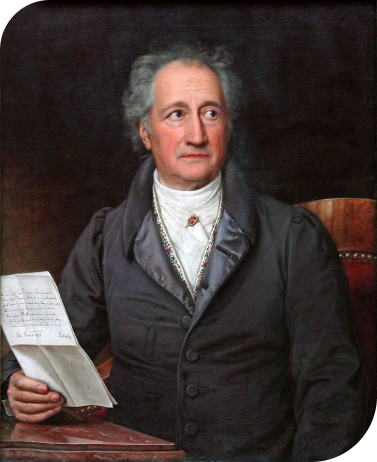

Иоган Вольфганг
Гёте

Иоганн Вольфганг фон Гёте, немецкий писатель, поэт, драматург, философ и ученый. Он считается одним из самых великих и влиятельных литературных фигур всех времен.Гёте проявил себя как талантливый писатель еще в раннем возрасте. Его первые работы были написаны еще в школьные годы. Он получил классическое образование и интересовался различными областями науки и искусства. Он изучал медицину, натуральные науки, философию, лингвистику и искусство.
Однако Гёте стал широко известен благодаря своей литературной деятельности.
Наиболее известные произведения Гёте: "Фауст", "Вертер".